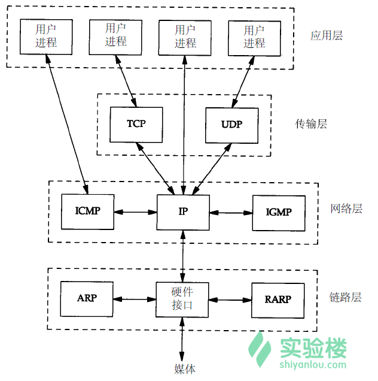

网络协议
TCP/IP详解¶
-
(1)应用层：应用程序通过这一层访问网络，常见 FTP、HTTP、DNS 和 TELNET 协议；
-
(2)传输层：TCP 协议和 UDP 协议；
-
(3)网络层：IP 协议，ARP、RARP 协议，ICMP 协议等；
-
(4)网络接口层：是 TCP/IP 协议的基层，负责数据帧的发送和接收。 
- SMTP（简单邮件传输协议）服务器的 TCP 端口号都是 25，
- FTP（文件传输协议）服务器的 TCP 端口号都是 21，
- TFTP(简单文件传输协议)服务器的 UDP 端口号都是 69。
5、封装和分用
封装：当应用程序发送数据的时候，数据在协议层次当中从顶向下通过每一层，每一层都会对数据增加一些首部或尾部信息，这样的信息称之为协议数据单元（Protocol Data Unit，缩写为PDU），在分层协议系统里，在指定的协议层上传送的数据单元，包含了该层的协议控制信息和用户信息。如下图所示：
- 物理层（一层）PDU指数据位（Bit） - 数据链路层（二层）PDU指数据帧（Frame） - 网络层（三层）PDU指数据包（Packet） - 传输层（四层）PDU指数据段（Segment） - 第五层以上为数据（data）
 - 分用：当主机收到一个数据帧时，数据就从协议层底向上升，通过每一层时，检查并去掉对应层次的报文首部或尾部，与封装过程正好相反。
- 分用：当主机收到一个数据帧时，数据就从协议层底向上升，通过每一层时，检查并去掉对应层次的报文首部或尾部，与封装过程正好相反。
- 6、RFC RFC（Request for Comment）文档是所有以太网协议的正式标准，并在其官网上面公布，由 IETF 标准协会制定。大量的 RFC 并不是正式的标准，出版的目的只是为了提供信息。RFC 的篇幅不一，从几页到几百页不等。每一种协议都用一个数字来标识，如 RFC 3720 是 iSCSI 协议的标准，数字越大说是 RFC 的内容越新或者是对应的协议（标准）出现的比较晚。 所有的 RFC 文档都可以从网络上找到，其官网为IETF。在网站上面可以通过分类以及搜索快速找到目标协议的 RFC 文档。目前在 IETF 网站上面的 RFC 文档有数千个，但是我们不需要全部掌握，在工作或学习中如果遇到可以找到对应的解释，理论与实际结合会有更好地效果，单纯阅读 RFC 的效果一般。
网络层其它协议¶
网络层不仅有 IP 协议，还有其它如 ARP、ICMP 等其它协议，这一节我们将对这些协议做介绍。
一、ARP(Address Resolution Protocol)地址解析协议¶
功能
当主机通过数据链路发送数据的时候， IP 数据报 会先被封装为一个 数据帧 ，而 MAC 地址 会被添加到数据帧的 报头 （链路层介绍时已讲过）。 ARP 便是在这个过程中通过目标主机的 IP 地址，查询目标主机的 MAC 地址。
原理
在你的电脑和路由器中都有一个 ARP 缓存表 ，其中保存的是近期(20 分钟)与自己有过通信的主机的 IP 地址与 MAC 地址的对应关系。
ARP 缓存表使用过程：
-
当主机要发送一个 IP 数据报的时候，会首先查询一下自己的 ARP 缓存表；
-
如果在 ARP 缓存表中找到对应的 MAC 地址，则将 IP 数据报封装为数据帧，把 MAC 地址放在帧首部，发送数据帧；
-
如果查询的 IP－MAC 值对不存在，那么主机就向网络中广播发送一个 ARP 请求数据帧，ARP 请求中包含待查询 IP 地址；
-
网络内所有收到 ARP 请求的主机查询自己的 IP 地址，如果发现自己符合条件，就回复一个 ARP 应答数据帧，其中包含自己的 MAC 地址；
-
收到 ARP 应答后，主机将其 IP - MAC 对应信息存入自己的 ARP 缓存，然后再据此封装 IP 数据报，再发送数据帧。
你可以通过命令 arp -a 查看 ARP 缓存表(表项记录 20 分钟超时)，这里还有其它 ARP 命令可以对缓存表做查看、修改：
ARP 代理
如果 ARP 请求是从一个网络上的主机发往另一个网络上的主机，那么连接这两个网络的路由器就可以回答该 ARP 请求，这个过程称作 代理 ARP（Proxy ARP）。
当连接这两个网络的路由器收到该 ARP 请求时，它会发现自己有通向目的主机的路径，随后它会将自己(路由器)的 MAC 地址回复给源主机。源主机会认为路由器的 MAC 地址就是目的主机的 MAC 地址，而对于随后发来的数据帧，路由器会转发到它后面真实 MAC 地址的目的主机。
两个物理网络之间的路由器可以使这两个网络彼此透明化，在这种情况下，只要路由器设置成一个 ARP 代理，以响应一个网络到另一个网络主机的 ARP 请求，两个物理网络就可以使用相同的网络号。
ARP 欺骗
从 ARP 代理的原理可以看出来：IP - MAC 的对应信息很容易被伪造！黑客可以伪造 ARP 应答数据帧而欺骗 ARP 请求者，从而达到截获数据的目的。
二、RARP(Reverse Address Resolution Protocol)逆向地址解析协议¶
听名字就知道，RARP 与 ARP 是相反的关系，用于将 MAC 地址转换为 IP 地址。对应于 ARP，RARP 请求以广播方式传送，而 RARP 应答一般是单播传送的。
某些设备，比如无盘机在启动时可能不知道自己的 IP 地址，它们可以将自己的 MAC 地址使用 RARP 请求广播出去，RARP 服务器就会响应并回复无盘机的 IP 地址。
RARP 在目前的应用中已极少被使用，不再赘述了。
三、ICMP(Internet Control Message Protocol)控制报文协议¶
通信过程中的发生各种问题时，ICMP 将问题反馈，通过这些信息，管理者可以对所发生的问题作出诊断，然后采取适当的措施去解决它。
ICMP 报文由 8 位错误类型、8 位条件代码和 16 位校验和组成，被封装在一个 IP 数据报中：
报文的类型字段可以有 15 个不同的值，以便描述特定类型的 ICMP 报文，代码字段的值进一步描述不同的条件，各类型的报文及其处理方法如图所示：
也有一些出现差错而不产生 ICMP 报文的情况：
-
1.ICMP 差错报文
-
2 . 目的地址是广播或多播地址
-
3.作为链路层广播的数据报
-
4.不是 IP 分片的第一片
-
5.源地址不是单个主机的数据报（源不能为零地址、环回地址、广播多播地址）
四、ping 程序和 traceroute 程序¶
ping 程序和 traceroute 程序是两个常见的 基于 ICMP 协议 的工具。
ping
ping 程序是对两台主机之间连通性进行测试的基本工具，它只是利用 ICMP 回显请求和回显应答报文，而不用经过传输层（TCP/UDP）。
ping 程序通过在 ICMP 报文数据中存放发送请求的时间值来计算往返时间，当应答返回时，用当前时间减去存放在 ICMP 报文中的时间值，即是往返时间。
ping 程序使用方法为 ping IP 地址 ，ping 命令还可以加上参数，实现更多的功能：
- -n 只输出数值。
- -q 不显示任何传送封包的信息，只显示最后的结果。
- -r 忽略普通的 Routing Table，直接将数据包送到远端主机上。通常是查看本机的网络接口是否有问题。
- -R 记录路由过程。
- -v 详细显示指令的执行过程。
- -c 数目：在发送指定数目的包后停止。
- -i 秒数：设定间隔几秒送一个网络封包给一台机器，预设值是一秒送一次。
- -t 存活数值：设置存活数值 TTL 的大小。
traceroute
traceroute 程序是用来侦测主机到目的主机之间所经路由情况的重要工具。刚才 ping 程序中讲过，带 -R 参数的 ping 命令也可以记录路由过程，但是，因为 IP 数据报头的长度限制(最多能保存 9 个 IP 地址)，ping 不能完全的记录下所经过的路由器，traceroute 正好就填补了这个缺憾。
实验楼环境没有 traceroute 程序，需要使用以下命令安装：
sudo apt-get install traceroute
traceroute 程序的工作原理很简单：
-
它发送一份 TTL 为 1 的 IP 数据报给目的主机，经过第一个路由器时，TTL 值被减为 0，则第一个路由器丢弃该数据报，并返回一份超时 ICMP 报文，于此得到了路径中第一个路由器的地址；
-
然后再发送一份 TTL 值为 2 的数据报，便可得到第二个路由器的地址；
-以此类推，一直到到达目的主机为止，这样便记录下了路径上所有的路由 IP。
本页面的全部内容在 协议之条款下提供，附加条款亦可能应用。